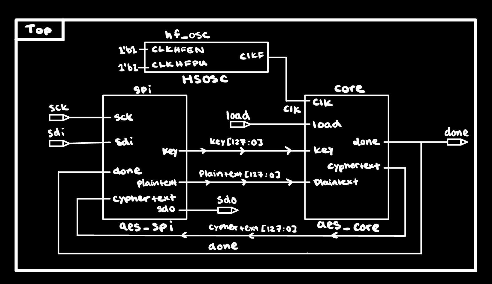
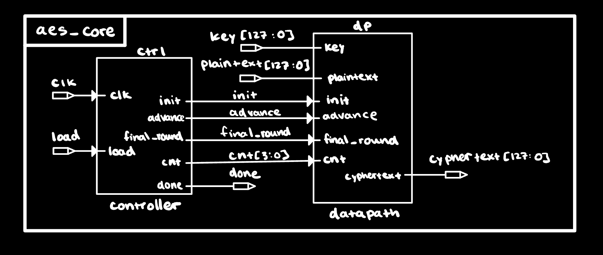
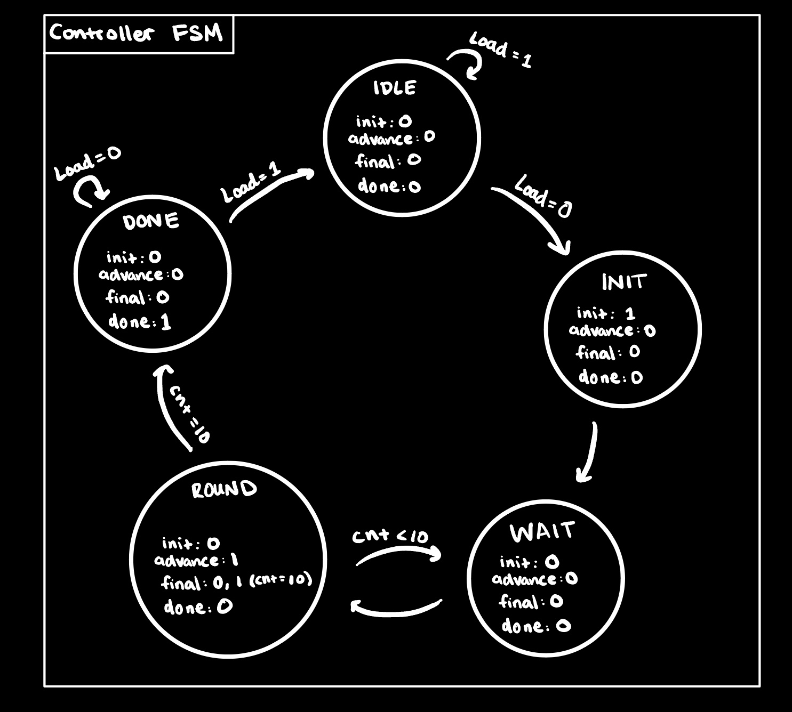
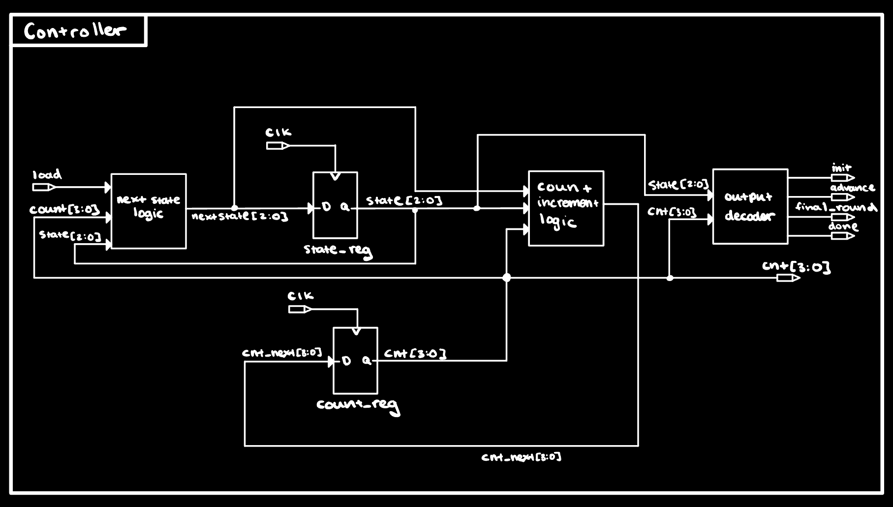
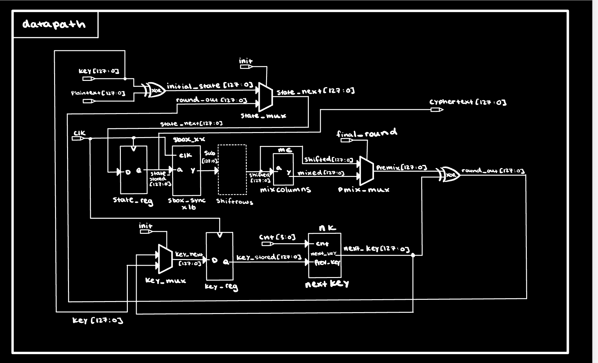
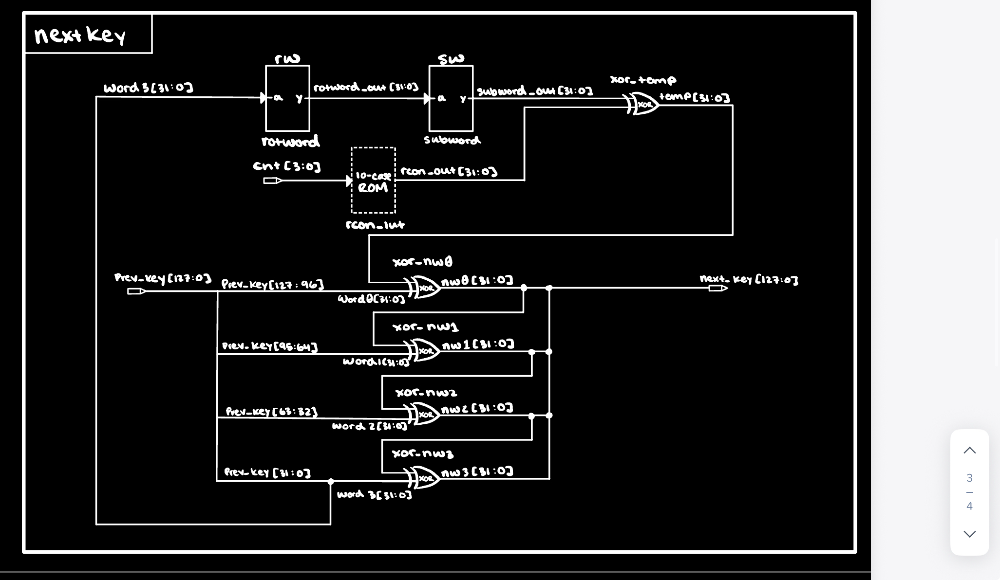
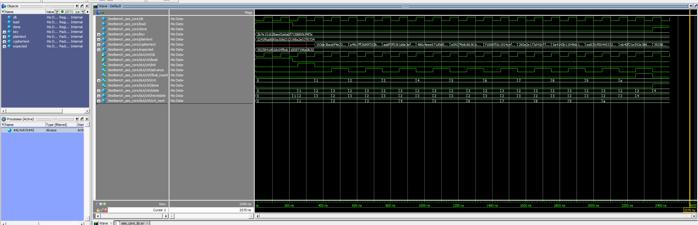
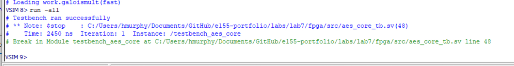
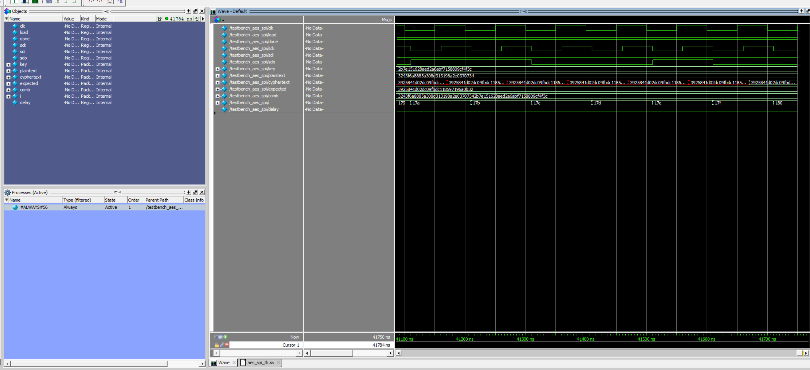
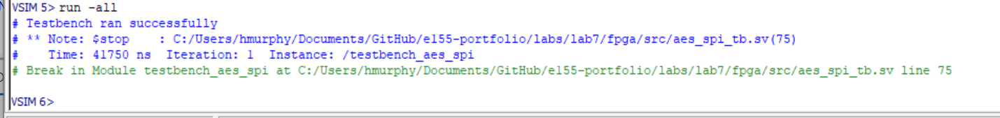

Lab 7 — AES-128 Hardware Accelerator
Introduction
Lab 7 builds a hardware AES-128 encryption accelerator on an FPGA (Lattice iCE40 UP5K) and verifies it against a given test vector (directly from FIPS-197). The STM32L432KC MCU acts as the controller: it drives signals: ‘load’ low to initiate a transaction, shifts a 128-bit key and 128-bit plaintext into the FPGA over SPI, polls the FPGA’s ‘done’ output, then shifts the resulting 128-bit ciphertext back out and compares it against the known-good value ‘3925841D02DC09FBDC118597196A0B32’. Success lights PA9; failure lights PA10.
Design and Methology
For this design, the AES core decomposes into three authored modules plus three helpers. ‘controller’ is a 5-state FSM that sequences one init cycle, ten ‘advance’ cycles separated by ‘wait’ cycles (used to absorb the 1-cycle sbox BRAM latency), and holds ‘done’ high at the end. ‘datapath’ carries the 128-bit state and 128-bit round key through SubBytes → ShiftRows → MixColumns → AddRoundKey each cycle. ‘nextkey’ computes the next-round key combinationally from the previous key and round number, using ‘rotword’, ‘subword’, and an ‘rcon’ lookup table (given in FIPS-197).
Controller FSM
Five states denoted by 3-bit encoding, outputs: ‘IDLE (0)’, ‘INIT (1)’, ‘WAIT (2)’, ‘ROUND (3)’, ‘DONE (4)’. ‘IDLE → INIT’ triggers on falling edge of ‘load’. ‘INIT’ asserts ‘init’ to assign ‘state = key ^ plaintext’ and ‘key_stored = key’, and sets ‘cnt = 1’. Each ‘WAIT / ROUND’ pair performs one AES round: ‘WAIT’ gives the synchronous sbox one cycle to settle, ‘ROUND’ asserts ‘advance’ to assign the next state and next key. On ‘cnt == 10’, ‘ROUND’ also asserts ‘final_round’ (which selects ‘shifted’ instead of ‘mixed’ for AddRoundKey), then transitions to ‘DONE’. ‘DONE’ asserts ‘done’ and holds until ‘load’ goes high again.
Datapath
Sixteen ‘sbox_sync’ instances (one per state byte, mapped to BRAM) produce ‘sub’ on the next clock edge. ‘shifted’ reorders those bytes per the AES ShiftRows table combinationally. ‘mixcolumns’ performs the GF(2^8) column mix. A 2:1 mux selects between ‘mixed’ (for normal rounds) and ‘shifted’ (for the final round) via ‘final_round’ where the result is XOR’d with ‘next_key’ to produce ‘round_out’. The ‘state_stored’ register assigns ‘state_next = init ? (key ^ plaintext) : round_out’ whenever ‘init | advance’. The ‘key_stored’ register assigns ‘key’ on ‘init’ and ‘next_key’ otherwise. ‘cyphertext’ is tied to ‘state_stored’.
KeyExpansion (nextkey)
Combinational logic following FIPS-197 §5.2 for Nk=4:
- ‘nw0 = w0 ^ SubWord(RotWord(w3)) ^ Rcon[cnt]’
- ‘nw1 = nw0 ^ w1’
- ‘nw2 = nw1 ^ w2’
- ‘nw3 = nw2 ^ w3’
‘rotword’ is a wire-level byte rotation. ‘subword’ instantiates four sboxes in parallel on the four bytes of its input. The ‘rcon_lut’ is a ‘case (cnt)’ returning the standard Rcon sequence ‘01, 02, 04, 08, 10, 20, 40, 80, 1B, 36’ in the high byte.
Oscillator and clocking
The iCE40 UP5K’s internal 48 MHz oscillator must be explicitly instantiated. The top-level ‘aes’ module declares ‘clk’ as an internal signal and brings up the oscillator with:
SB_HFOSC #(.CLKHF_DIV("0b10")) hfosc_inst (
.CLKHFPU(1'b1),
.CLKHFEN(1'b1),
.CLKHF(clk)
);Testing
Two provided testbenches validated the design before hardware:
- ‘aes_core_tb.sv’ — which drives the FIPS-197 test vector: plaintext ‘00112233445566778899AABBCCDDEEFF’, and key ‘000102030405060708090A0B0C0D0E0F’ directly into ‘aes_core’ and checks the ciphertext.
- ‘aes_spi_tb.sv’ — exercises the full top-level ‘aes’ through its SPI port, mimicking the MCU’s shift-in / wait-for-done / shift-out protocol.
Technical Documentation
The source code for the FPGA core and the full SEGGER project for the MCU can be found in the ‘/labs/lab7/fpga/’ and ‘/labs/lab7/mcu/’ directories of the following GitHub repository.
Documentation
Top-level block diagram (aes)

aes_core block diagram

Controller FSM state diagram

Controller structural block diagram

Datapath block diagram

KeyExpansion (nextkey) block diagram

Results and Discussion
Both testbenches passed with the FIPS-197 standard vector:
- Plaintext:
00112233445566778899AABBCCDDEEFF - Key:
000102030405060708090A0B0C0D0E0F - Expected ciphertext:
3925841D02DC09FBDC118597196A0B32
Simulation




Hardware Testing
With the bitstream programmed to the UP5K and the MCU reset after both boards had powered up, PA9 (success LED) lit, confirming the FPGA produced the correct ciphertext end-to-end.
An interesting edge case appeared during cold-start: PA10 (fail LED) would light on initial power-up, and PA9 only lit after an MCU reset. The cause is that the FPGA reads its bitstream from external SPI flash on power-up (takes several ms) and the oscillator requires a brief stabilization window after that, whereas the MCU boots and reaches ‘encrypt()’ within a different time window.
SPI Protocol Matching
Both ends of the SPI link run in Mode 0 (CPOL=0, CPHA=0). On the MCU side, ‘lab7.c’ calls ‘initSPI(1, 0, 0)’‘, which writes zeros into the ’SPI_CR1.CPOL’ and ‘SPI_CR1.CPHA’ fields, indicating that SCK idles low and the master samples MISO on the leading (rising) edge. On the FPGA side, the provided ‘aes_spi’ module captures ‘sdi’ on the posedge and updates ‘sdo’ on negedge of ‘sck’. This matches Mode 0 by construction: data is set up on the falling edge in between and stable at every rising-edge sample point.
Summary & Conclusion
The design meets the Proficiency hardware requirement for the lab’s specification: the FPGA receives a 128-bit AES-128 key and 128-bit plaintext over SPI from the STM32L432KC, computes the correct ciphertext per FIPS-197 Appendix B in a Moore-controlled pipelined datapath, asserts ‘done’ to signal completion, and shifts the ciphertext back over SPI for the MCU to verify. Hardware verification lit PA9 (success).
This submission meets every Proficiency requirement in the Lab 7 spec.
AI Prototype Summary
The AES KeyExpansion step was prototyped twice with an LLM (Claude) to test how prompt framing and domain context affect the generated HDL.
Reflection
Prompt A fed the FIPS-197 document and asked for a module that computes the next round key from the previous one, and produced a per-round, AES-128 specific module that was structurally similar to the my own ‘nextkey.sv’ module. Both the same decomposition (RotWord → SubWord → XOR Rcon → cascade XOR), and the same Rcon table (‘01, 02, 04, 08, 10, 20, 40, 80, 1B, 36’). Granted this makes alot of sense given the FIPS-197 standard. Three things the LLM added on its own by reading the attached document: FIPS-vocabulary module names (‘rotword’, ‘subword’), the complete 256-entry S-box from Table 4 of the standard, and in-code section citations (‘§5.2’, ‘§3.3’, etc.). Once both rotword and subword module were not assumed, and defined, the given design synthesised fully in radiant.
Prompt B fed abstract pseudocode with ‘module1’/‘module2’ placeholders, forbidden to use AES-specific knowledge, and told explicitly to unroll the loop having it produce a fully-unrolled parameterized ‘generate’-based module that computed all 44 round-key words at once (‘w[0..NW-1]’) for a configurable ‘Nk’ and ‘Nr’. The LLM honored the “ignore AES specifications” clause superficially by using generic variable names, placeholder helpers, but preserved the AES-256 special case (‘Nk > 6 && i mod Nk == 4’) because the pseudocode encoded it. This can be seen as an indication that context leaked through the prompt is stronger than an explicit instruction to ignore domain knowledge.
It can be found that my own design converged on Prompt A’s architecture not necesarily because of a shared source, but because both were targeting a controller-sequenced one-round-per-cycle design on a resource-constrained iCE40 UP5K. Prompt B’s unrolled output would require 11 copies of RotWord and SubWord in parallel which would exceed the available BRAM budget far for the FPGA. The lesson from running both prompts is: a specific interface description produces the hardware you actually want to synthesize; an abstract loop plus an “unroll it” directive produces a mathematically efficient and elegant design but architecturally, the wrong answer for the given platform. Domain context (FIPS-197 attachment) filled in the specific constants and vocabulary once the architecture was predetermined by the prompt phrasing.
Hours Spent
- Lit Review: 4 Hours
- Design Ideation and Block Diagrams: 7 Hours
- Verilog Synthesis: 3 Hours
- Simulation (via testbenches): 4 Hours
- Hardware bringup & Debugging: 2 Hours
- Write Up: 3 Hours
- Total: 23 Hours